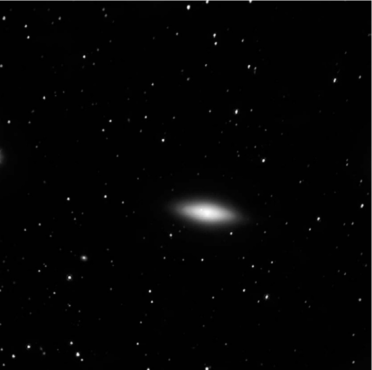

NGC 4036 · 星系 (NGC 4036)

NGC 4036 is a highly condensed, nearly edge-on lenticular galaxy nestled between two second-magnitude stars in the Bowl of the Big Dipper. Its brilliant nucleus burns through the cosmic darkness like a lighthouse beacon, while its delicate dust lanes trace the ghostly outline of a galaxy caught between two fundamental forms—the lens-shaped S0 and the grand-design spiral. Discovered by William Herschel in 1790, this celestial jewel has spent over two centuries beckoning astronomers to peer deeper into its structural secrets.
NGC 4036是一颗高度致密的、几乎侧向的透镜状星系，镶嵌在北斗七星斗部两颗二等星之间。其耀眼的核球如同一座灯塔般穿透宇宙的黑暗，而纤细的尘埃带则勾勒出一个介于两种基本形态——透镜状的S0型与壮丽的旋涡星系——之间的星系轮廓。这颗天体之美于1790年被威廉·赫歇尔发现，两个多世纪以来，它一直在召唤天文学家们深入窥探其结构的奥秘。
| 参数 Parameter | 值 Value |
|---|---|
| 类型 Type | 混合型透镜状/旋涡星系 Lenticular/Spiral (S0a/Sa) |
| 星座 Constellation | 大熊座 Ursa Major |
| 赤经 Right Ascension | 12h 01.4m |
| 赤纬 Declination | +61° 54′ |
| 视星等 Apparent Magnitude | 10.7 |
| 表面亮度 Surface Brightness | 12.7 |
| 角直径 Angular Size | 3.8′ × 1.9′ |
| 距离 Distance | 约8000万光年 ~80 million l.y. |
| 发现者 Discoverer | 威廉·赫歇尔 William Herschel, 1790年 |
| 倾角 Inclination | 18° |
| 真实直径 True Diameter | 约9万光年 ~90,000 l.y. |
W. Herschel wrote in his observing log on March 19, 1790: "Very bright, very little extended." Indeed, the galaxy's compact nature struck the legendary astronomer as much then as it does to modern observers today.
W. 赫歇尔在1790年3月19日的观测日志中写道："非常明亮，延展极小。"确实，这个星系紧凑的特性给这位传奇天文学家留下的深刻印象，与今日观测者的感受如出一辙。
"Very bright, very little extended." — William Herschel's original observation notes reveal that even the master observer was struck by this galaxy's peculiar concentration of light.
"非常明亮，延展极小。" —— 威廉·赫歇尔的原始观测笔记表明，即便是这位大师级观测者，也被这个星系异常集中的光芒所震撼。
原初分类与结构之谜 / Initial Classification and the Mystery of Structure
Initially, NGC 4036 was classified as a "clean, early type (S0) lenticular"—a lens-shaped galaxy with a central bulge and disk but no spiral arms and little interstellar material. This neat categorization seemed to fit until deeper imaging revealed intensity irregularities in the disk that shattered the notion of a typically smooth S0 galaxy.
最初，NGC 4036被归类为"典型的早期型（S0）透镜状星系"——一种具有中央核球和盘面但无旋臂、星际物质极少的透镜状星系。这种整齐的分类看似恰当，直到更深层的成像揭示了盘面中光度不规则性的存在，打破了典型平滑S0星系的既有认知。
"These 'irregularities' turned out to form a tightly wound spiral pattern." The discovery that NGC 4036 harbors embryonic spiral structure within its lenticular framework reveals the dynamic nature of galactic evolution—a galaxy caught in transformation.
"这些'不规则结构'后来被证实构成了一个紧密缠绕的旋涡图案。" 这一发现揭示了NGC 4036在透镜状框架内隐藏的胚胎期旋涡结构，展现了星系演化的动态本质——一个正处于转变中的星系。
The truth emerged through sophisticated astronomical imaging: three clearly defined dust lanes thread through the disk in an embryonic spiral pattern, accompanied by a low-contrast nuclear ring. The dust distribution creates an asymmetry—the galaxy's southern side appears noticeably dimmer and redder than the north. These dust lanes lack the perfect regularity of a pure lenticular type, confirming that NGC 4036 is truly a mixed lenticular/spiral (S0/Sa) form.
借助先进的天文成像技术，真相浮出水面：三条清晰定义的尘埃带以胚胎期旋涡图案贯穿盘面，同时伴随着一个低对比度的核环。尘埃分布的不对称性使星系的南侧明显比北侧更暗、更红。这些尘埃带缺乏纯透镜状星系的完美规则性，证实NGC 4036实际上是透镜状/旋涡（S0/Sa）混合型星系。
活跃星系核与哈勃的凝视 / Active Nucleus and the Hubble's Gaze
NGC 4036 has been classified as harboring a Low-Ionization Nuclear Emission-line Region (LINER)—a type of gaseous region common in the centers of galaxies that represents a low-energy form of Active Galactic Nuclei (AGN), comparable to a Seyfert galaxy at its lowest level of activity.
NGC 4036被归类为拥有一个低电离核发射线区（LINER）——一种常见于星系中心的气体区域，代表着活动星系核（AGN）的低能形态，可类比于活动水平最低的赛弗特星系。
"The production of the energy feeding the jet probably comes from a supermassive black hole at the galaxy's heart." In the center of this cosmic lens burns the gravitational fury of a black hole millions of times more massive than our Sun.
"驱动喷流的能量很可能源自该星系核心的超大质量黑洞。" 在这个宇宙透镜的中心，燃烧着一颗质量相当于数百万个太阳的黑洞的引力狂暴。
In 2000, Richard W. Pogge and colleagues from Ohio State University presented Hubble Space Telescope narrowband emission-line images that pierced to the very heart of NGC 4036. Their findings revealed the nucleus as an ellipse with a major axis of 0.6 arcseconds along a position angle of 45 degrees. One of HST's unsharp-masked images uncovered wisps of dust in a disk-like configuration surrounding the nucleus on all scales, while the core displayed a complex filamentary and clumpy structure with several "tentacles" extending 4 arcseconds northeast—possibly an ionization cone of the kind commonly seen in Seyfert galaxies.
2000年，俄亥俄州立大学的理查德·W·波奇及其合作者发表了哈勃太空望远镜窄波段发射线成像观测结果，直击NGC 4036的核心。他们的发现揭示了核球呈长轴0.6角秒、方位角45度的椭圆结构。哈勃太空望远镜的一张非锐化掩模图像发现了覆盖所有探测尺度的盘状分布尘埃丝缕，而核区本身呈现出复杂的纤维状和团块状结构，数条"触须"向东北方向延伸4角秒——这可能是赛弗特星系中常见的那种电离锥。
"This is one of the few LINERs in our sample whose emission-line morphology can possibly be termed 'linear' in some sense, but it seems that this morphology is in the plane of the inclined dusty disk, rather than perpendicular to it."
"这是我们样本中少数几个LINER之一，其发射线形态在某种意义上可被称为'线性'，但这一形态似乎位于倾斜尘埃盘的平面内，而非与之垂直。"
寻找深空珍宝 / Finding This Deep-Sky Treasure
To locate this remarkable galaxy, begin at Alpha (α) Ursae Majoris—the brilliant star marking the lip of the Big Dipper's Bowl. Sweep approximately 3 degrees northeast to find a pair of 6th-magnitude stars. Center the southernmost star in your eyepiece at low power, then drift 1 degree southeast to locate a 7th-magnitude guide star. From there, hop 55 arcminutes northeast to a 6.5-magnitude star, then another 25 arcminutes east-southeast to find a pair of 8th and 9th-magnitude stars. Continue northeast for 55 more arcminutes to reach an arc of three stars (magnitude 6.5 to 7.5). NGC 4036 awaits approximately 35 arcminutes northeast
🔒 受限于篇幅，本文仅展示部分样章。O'Meara 先生完整的观测手记、实测数据及未公开的独家配图，请参阅原著双语典藏版。
👉 立即在闲鱼获取《DEEP-SKY COMPANIONS》中英双语高清典藏版